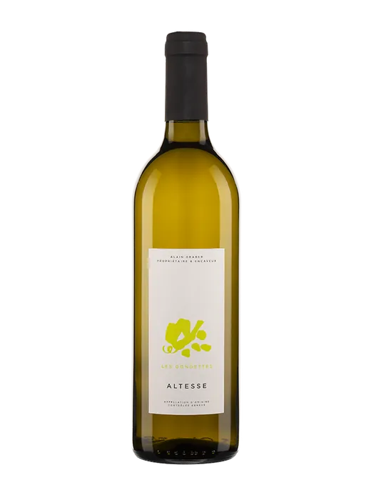
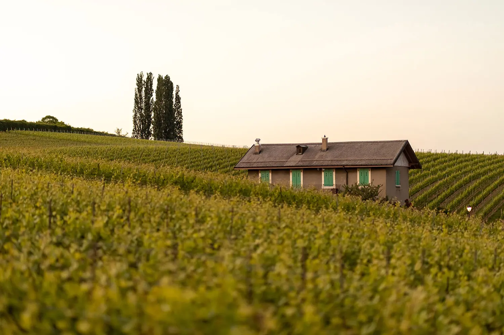
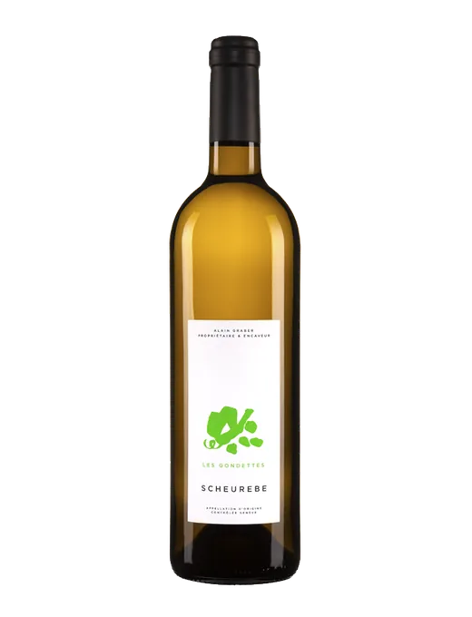
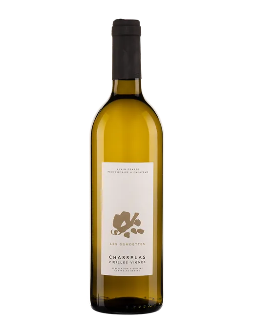
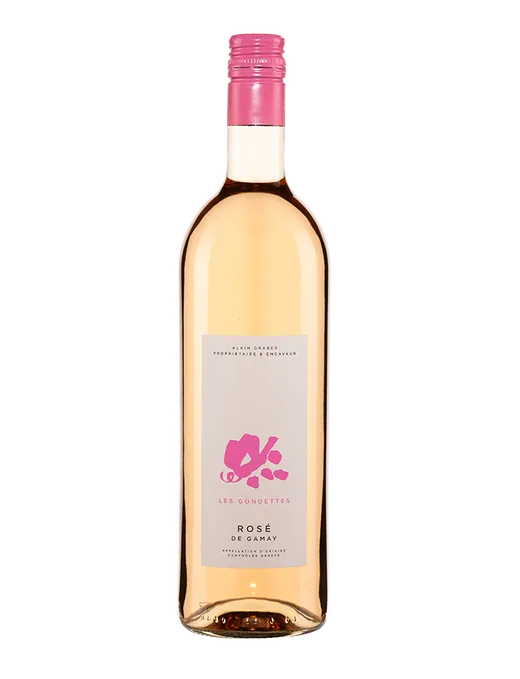
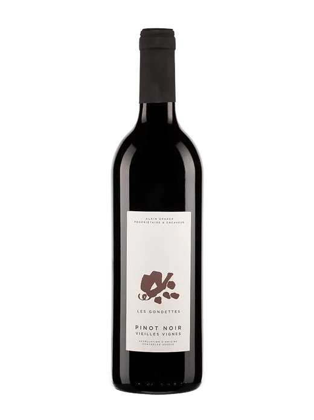
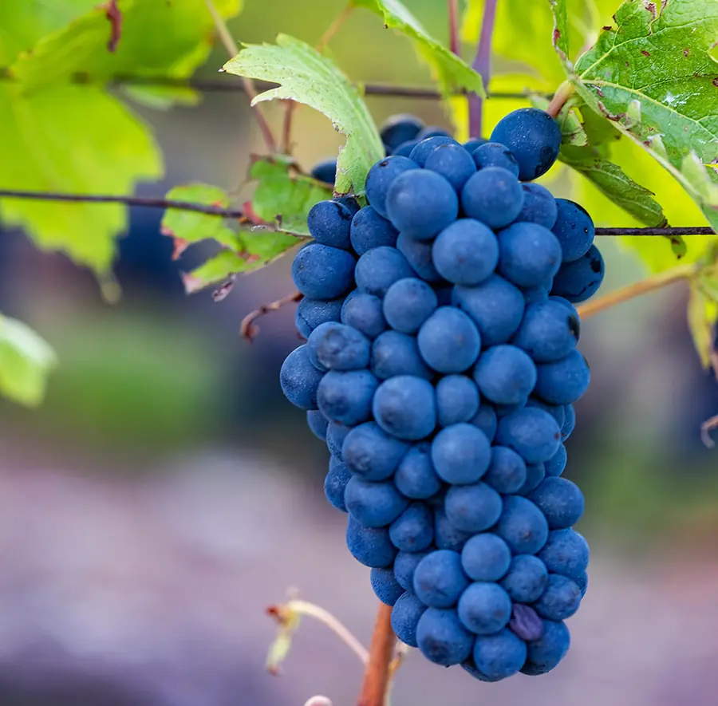
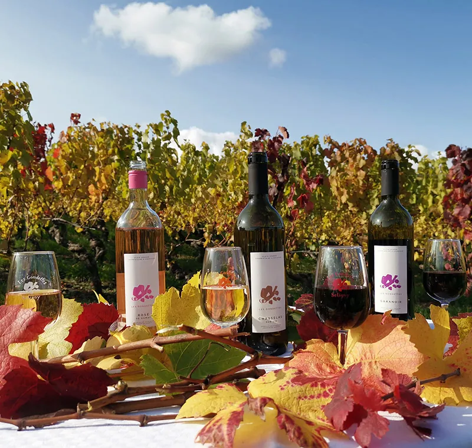

Satigny · GenèveDe la nature au palais
Des vins élevés et récoltés à la propriété, pour le plaisir d’offrir.
Voir les vinsChaque année, une nouveauté
Cinq étiquettes du domaine, chacune avec sa couleur. Toute la gamme est dans la boutique en ligne.




Et aussi : vins mousseux, bags in box et alcools forts. Ouvrir la boutique en ligne.

Un domaine, un chai voûté
Les Gondettes, ce sont douze hectares de vigne partagés entre sept cépages, et un chai dont la cave aux larges voûtes a un cachet architectural unique.
Le domaine a été dirigé jusqu’en août 2019 par Françoise Berguer, première femme vigneronne de Suisse. Son bras droit depuis plus d’un quart de siècle a repris le flambeau fin 2019.
Nous sommes le maillon d’une chaîne d’artisans passionnés.
12 hade vigne
7cépages

Des artistes à la cave
Deux fois par an, le domaine accueille une exposition d’artistes : en juin au pressoir et dans les vignes, en novembre à la cave.
Les dates sont annoncées sur le site du domaine.
Passer à la cave
Domaine viticole Les Gondettes
Rampe de Choully 35, 1242 Satigny
AppelerItinéraire
- Lundi – vendredi9h–12h · 14h–17h
- Samedi9h–17h
- Dimanchefermé